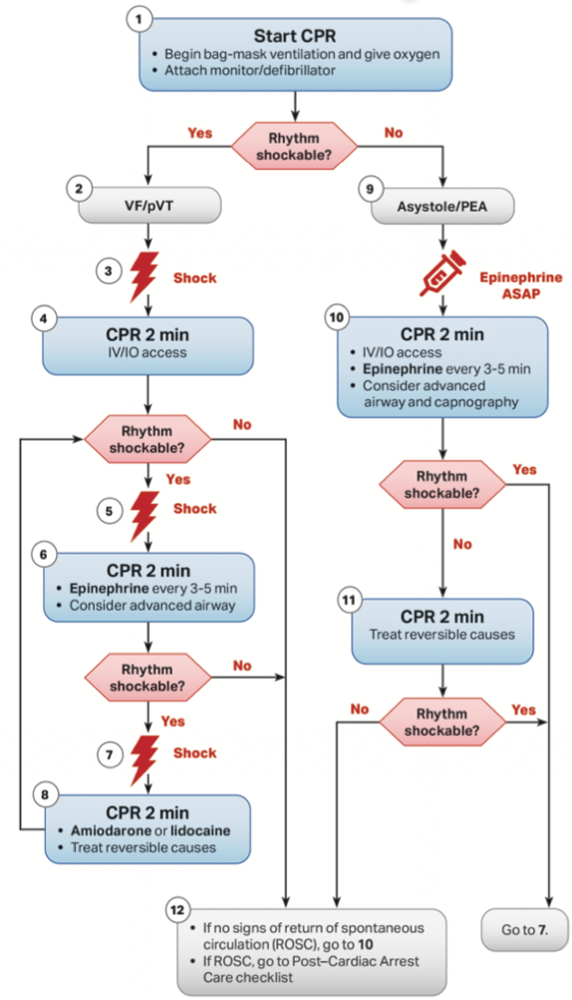

Immediate Actions

- Call for Help, Call “code blue”, activate ECMO team early
- Start CPR, call for board if on stretcher or bed to maximize
- CPR effectiveness, call for code cart
- Call for nitric oxide early if hypoxemic arrest
- Consider early chest exploration for patients immediate postop
- Call for echocardiography to help with diagnosis
- Call for blood if not present
- Assess for presence of pacemaker wires and call for pacer